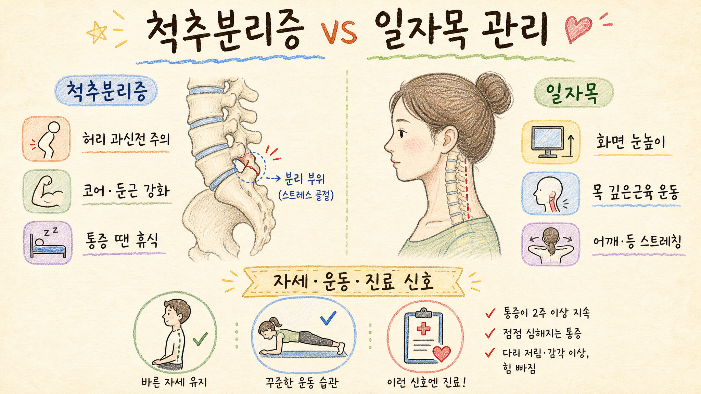

척추분리증·일자목 관리법 분석 보고서
척추분리증은 주로 허리뼈 뒤쪽 구조의 피로성 결손·스트레스 손상, 일자목은 목의 자연스러운 전만 곡선이 줄어든 자세·정렬 문제와 관련됩니다. 둘 다 “운동하면 무조건 좋아진다”보다 증상 단계, 진단 여부, 피해야 할 움직임을 구분하는 것이 핵심입니다.
짧은 고지: 이 보고서는 공개 의료 자료를 바탕으로 한 일반 정보입니다. 개인 진단·처방이 아니며, 통증·저림·근력저하 등 증상이 있으면 의료진 상담을 권장합니다.
핵심 결론
- 척추분리증은 허리 과신전·회전 반복이 악화 요인이 될 수 있어, 통증기에는 운동량 조절과 코어·둔근 안정화가 중요합니다.
- 일자목은 장시간 고개 숙임, 모니터 높이, 어깨·등 긴장과 함께 나타나는 경우가 많아, 자세 환경과 목 깊은근육·등 운동을 같이 봐야 합니다.
- 두 문제 모두 영상 소견만으로 생활 제한을 단정하지 말고, 실제 증상·신경학적 징후·기능 저하를 기준으로 관리 강도를 정해야 합니다.
- 다리 저림·근력저하, 보행 이상, 대소변 이상, 외상 후 심한 통증, 암·감염 의심 신호는 자가관리보다 진료가 우선입니다.
보고서모드1 인포그래픽

기본 손그림 스타일: 미색 종이, 색연필·크레용, 손글씨 학습노트 느낌
1. 한눈에 비교
| 구분 | 척추분리증 | 일자목 |
|---|---|---|
| 핵심 개념 | 허리뼈 뒤쪽 협부(pars interarticularis)에 피로성 결손·스트레스 골절이 생긴 상태. 일부는 척추전방전위증과 연결될 수 있음. | 목뼈의 정상 전만 곡선이 줄어 상대적으로 곧게 보이는 정렬. 질병명 하나라기보다 통증·자세·근육 긴장과 함께 평가되는 소견. |
| 흔한 배경 | 성장기 운동선수, 허리를 뒤로 젖히고 비트는 동작이 반복되는 종목, 갑작스러운 훈련량 증가. | 스마트폰·노트북을 오래 내려다보기, 낮은 모니터, 장시간 운전·공부, 어깨 말림과 등 근육 약화. |
| 주요 증상 | 허리 통증, 뒤로 젖힐 때 악화, 운동 후 통증, 엉덩이·허벅지 쪽 불편감. 신경 압박이 있으면 다리 저림 가능. | 목·어깨 통증, 뻣뻣함, 두통, 날개뼈 주변 통증, 팔 저림. 단순 정렬 소견만 있고 증상이 없을 수도 있음. |
| 관리 방향 | 통증 유발 동작 줄이기 → 코어 안정화 → 엉덩이·햄스트링 유연성 → 단계적 복귀. | 화면 높이·휴식 간격 조정 → 턱 당김·목 깊은근육 운동 → 흉추·어깨 가동성 → 장시간 자세 분산. |
2. 원인과 악화 요인
척추분리증
- 허리를 반복적으로 젖히거나 회전하는 운동에서 협부에 스트레스가 누적될 수 있습니다.
- 성장기에는 뼈가 아직 성숙 중이라 훈련량 급증, 휴식 부족, 유연성 저하가 영향을 줄 수 있습니다.
- 양측 결손이나 전위가 동반되면 허리 안정성이 더 중요해집니다.
일자목
- 고개를 앞으로 뺀 자세가 길어지면 목 뒤쪽 근육은 과긴장, 앞쪽 깊은근육은 약화되기 쉽습니다.
- 목만의 문제가 아니라 흉추 굽음, 어깨 말림, 시력·작업환경, 수면 자세와 함께 나타날 수 있습니다.
- 엑스레이상 곡선 감소가 있어도 증상과 항상 1:1로 일치하지는 않습니다.
3. 증상과 진단: “영상 소견”보다 “기능·신경 신호”가 중요
| 항목 | 척추분리증 | 일자목 |
|---|---|---|
| 진료 평가 | 통증 위치, 운동·자세와의 관련, 허리 신전 검사, 신경학적 검사, 운동력·감각 평가. | 목 움직임, 자세, 근육 압통, 팔 저림 여부, 근력·감각·반사 등 신경학적 평가. |
| 영상검사 | 엑스레이, 필요 시 MRI·CT·SPECT 등으로 결손, 초기 스트레스 반응, 전방전위 여부 확인. | 엑스레이로 정렬을 볼 수 있으나, 디스크·신경 압박 의심 시 MRI 등 추가 검토. |
| 주의할 점 | 초기 스트레스 손상은 일반 엑스레이에서 잘 안 보일 수 있어, 지속 통증이면 재평가가 필요합니다. | 일자목이라는 표현만으로 원인을 단정하지 말고, 통증 원인이 근육·디스크·관절·신경인지 구분해야 합니다. |
4. 운동·생활관리 원칙
척추분리증 관리
- 통증기: 허리 과신전, 점프, 비틀기, 무거운 중량을 줄이고 상대적 휴식을 취합니다.
- 회복기: 복부 브레이싱, 데드버그, 버드독, 사이드 플랭크처럼 허리를 과하게 젖히지 않는 안정화 운동부터 시작합니다.
- 보강: 둔근·햄스트링·고관절 가동성을 함께 관리해 허리에 몰리는 힘을 줄입니다.
- 복귀: 통증이 줄고 기능이 회복되면 의료진·물리치료사 지도 아래 종목 동작을 단계적으로 늘립니다.
일자목 관리
- 환경: 모니터는 눈높이에 가깝게, 스마트폰은 가슴보다 높게, 30~60분마다 짧게 움직입니다.
- 운동: 턱 당김, 목 깊은 굴곡근 활성화, 견갑골 모으기, 흉추 신전 운동을 낮은 강도로 자주 합니다.
- 이완: 상부승모근·흉근·후두하근 긴장을 풀되, 강한 목 꺾기·무리한 도수 자극은 피합니다.
- 습관: 베개는 목이 과하게 꺾이지 않는 높이, 장시간 엎드려 보기·소파에 기대 스마트폰 보기를 줄입니다.
운동은 “아프지 않은 범위”가 기본입니다. 운동 중 통증이 퍼지거나 저림·힘 빠짐이 생기면 중단하고 진료 상담이 안전합니다.
5. 병원 진료가 필요한 신호
- 공통: 외상 후 심한 통증, 밤에 깨는 통증, 발열·체중감소, 암·감염 병력, 점점 심해지는 신경 증상.
- 척추분리증 쪽: 다리 저림·감각저하, 발목·발가락 힘 빠짐, 보행 이상, 대소변 조절 이상, 허리 통증이 수주 이상 지속되거나 운동 복귀 때 반복 악화.
- 일자목 쪽: 팔·손 저림이 내려가거나 근력저하가 동반될 때, 균형감 저하, 손놀림 둔화, 심한 두통·어지럼·시야 증상.
6. 피해야 할 행동
| 척추분리증에서 특히 주의 | 일자목에서 특히 주의 |
|---|---|
|
|
7. 반대의견·리스크·주의사항
| 쟁점 | 반대의견·리스크 | 균형 잡힌 접근 |
|---|---|---|
| “척추분리증이면 운동을 완전히 끊어야 한다” | 급성 통증기에는 쉬어야 하지만, 장기적으로는 근력·기능 회복이 중요합니다. 과도한 공포 회피는 체력 저하를 부를 수 있습니다. | 통증 유발 동작은 줄이고, 안전한 안정화 운동부터 단계적으로 늘립니다. |
| “일자목은 반드시 교정해야 낫는다” | 목 곡선과 통증은 항상 일치하지 않습니다. 사진·엑스레이 모양만 보고 비싼 교정 프로그램을 장기 결제하는 것은 리스크가 있습니다. | 증상, 기능, 작업환경, 근력·가동성을 함께 평가하고 실질적 개선을 봅니다. |
| “마사지·도수치료만 받으면 된다” | 일시적 완화는 가능해도 생활환경과 근력 문제가 그대로면 재발하기 쉽습니다. 강한 목 조작은 개인 상태에 따라 위험할 수 있습니다. | 수동치료는 보조로 두고, 자가운동·자세 분산·수면·업무환경을 같이 관리합니다. |
| “통증이 없으면 아무것도 안 해도 된다” | 증상이 없으면 과잉치료는 피해야 하지만, 반복 과부하 직업·운동을 한다면 예방 루틴은 도움이 됩니다. | 무증상자는 치료보다 교육·운동 습관·부하 조절 중심으로 접근합니다. |
8. 장기 관리 루틴
매일 3분
목 턱 당김 5~8회, 어깨 뒤로 돌리기, 가슴 열기. 통증 없는 범위.
목 턱 당김 5~8회, 어깨 뒤로 돌리기, 가슴 열기. 통증 없는 범위.
주 3~4회
척추 중립 코어: 데드버그, 버드독, 사이드 플랭크, 둔근 브릿지 변형.
척추 중립 코어: 데드버그, 버드독, 사이드 플랭크, 둔근 브릿지 변형.
업무·공부 중
30~60분마다 일어나기, 화면 높이 조정, 스마트폰은 눈높이에 가깝게.
30~60분마다 일어나기, 화면 높이 조정, 스마트폰은 눈높이에 가깝게.
운동 복귀
통증 0~2/10 수준 유지, 다음날 악화 없을 때만 강도·시간을 10~20%씩 증가.
통증 0~2/10 수준 유지, 다음날 악화 없을 때만 강도·시간을 10~20%씩 증가.
수면
목이 꺾이지 않는 베개, 허리 통증이 있으면 무릎 밑 쿠션 등 편한 자세 찾기.
목이 꺾이지 않는 베개, 허리 통증이 있으면 무릎 밑 쿠션 등 편한 자세 찾기.
재평가
2~6주 관리에도 악화·반복되면 진료로 원인과 운동 처방 재점검.
2~6주 관리에도 악화·반복되면 진료로 원인과 운동 처방 재점검.
최종 정리
척추분리증은 허리 과신전·회전 부하 관리와 안정화 운동, 일자목은 장시간 고개 숙임을 줄이고 목·등·어깨 기능을 회복하는 루틴이 핵심입니다. 다만 두 경우 모두 영상 소견만으로 자기진단하거나, 통증을 참고 운동을 밀어붙이는 방식은 피해야 합니다. 증상이 지속되거나 신경 증상이 있으면 의료진과 상담하세요.
공개 근거·참고자료
- AAOS OrthoInfo, Spondylolysis and Spondylolisthesis: https://orthoinfo.aaos.org/en/diseases--conditions/spondylolysis-and-spondylolisthesis/
- Cleveland Clinic, Spondylolysis: https://my.clevelandclinic.org/health/diseases/10303-spondylolysis
- Physiopedia, Spondylolysis: https://www.physio-pedia.com/Spondylolysis
- MedlinePlus, Neck Injuries and Disorders: https://medlineplus.gov/neckinjuriesanddisorders.html
- NHS, Neck pain and stiff neck: https://www.nhs.uk/conditions/neck-pain-and-stiff-neck/
- Harvard Health Publishing, 6 ways to ease neck pain: https://www.health.harvard.edu/pain/6-ways-to-ease-neck-pain
- Spine-health, Text Neck Treatment and Prevention: https://www.spine-health.com/conditions/neck-pain/text-neck-treatment-and-prevention
Jeremy's Insight by 🤖 딸깍봇 https://blog.naver.com/jeremylee0213